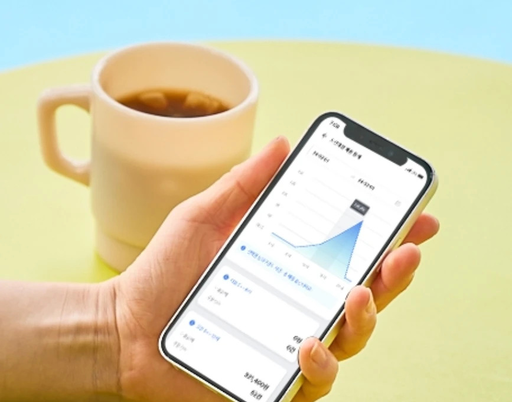

단순히 장비만 납품하지 않습니다. 비버 전 제품을 공급하고, 설치하고, 교육하고, 매일 곁에서 지원합니다.
메뉴를 한 번만 수정하면 키오스크·태블릿·포스·디스플레이에 즉시 반영됩니다. 재부팅도, 이중 입력도, 점검을 위한 영업 중단도 없습니다.
통합 메뉴 엔진AI 추천과 업셀, 적립 기능이 객단가를 높이고, 실시간 매출 데이터가 무엇이 잘 팔리는지 정확히 알려줍니다.
AI 추천365일 직영 고객지원. 외주 콜센터가 아니라 우리 매장 설정을 아는 담당자가 직접 전화를 받습니다.
연중무휴 직접 지원손님이 들어오는 순간부터 하루 정산까지 — 비버 라인업이 전부 책임지고, 클론다이크가 공급·지원합니다.
비버 키오스크, 배리어프리 키오스크, 보급형 외식·유통 모델, 그리고 현금 처리까지 가능한 오더퀸 유통 단말기 — 모든 제품에 결제가 내장되어 있습니다.
비버 포스 세트, 네트워크 주방 프린터, 주방 디스플레이(KDS) — 주문이 계산대에서 주방까지 종이 없이, 이중 입력 없이 흐릅니다.
비버 테이블오더 태블릿(테이블 결제 선택 가능), QR오더, 매장 메시 네트워크로 손님이 자리에서 또는 본인 휴대폰으로 주문합니다.
비버페이 결제, IoT 무인 출입, 비버포인트 적립, 통합 관리 대시보드가 매출·현금·고객을 하나로 묶어 줍니다.
다섯 개 업체와 세 개의 로그인을 짜맞출 필요 없습니다. 모든 기기를 하나의 대시보드로 연결해 휴대폰으로 확인하세요 — 계산대에서든, 휴가지에서든.

전국의 주요 프랜차이즈와 리테일이 클론다이크가 공급하는 비버 매장연구소 플랫폼 위에서 운영되고 있습니다 — 편의점부터 카페, 퀵서비스 매장까지.
매장 정보를 알려주시면 공간과 예산에 맞는 구성을 설계해 드립니다. 부담 없이, 어려운 용어 없이.